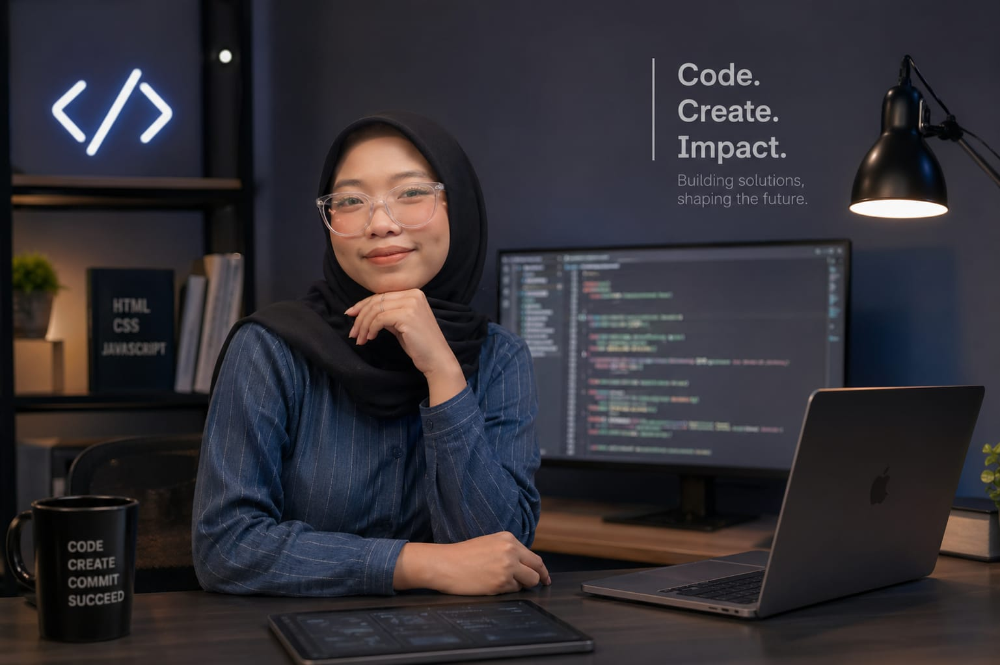

2026 — Memulai Dasar Web
Mulai memahami struktur HTML semantik, heading hierarchy, form, dan aksesibilitas dasar.
mahasiswa • future web developer • selalu bertumbuh dan belajar setiap hari

Halo, saya Nita. Saat ini saya adalah mahasiswa semester 4 yang masih menempuh pendidikan sambil mempelajari dunia web development. Saya percaya bahwa kemampuan digital akan menjadi aset penting di masa depan, karena hampir semua bidang saat ini terhubung dengan teknologi.
Saya mulai belajar website dari dasar, dimulai dari HTML, kemudian berlanjut ke CSS dan JavaScript. Saya menikmati proses belajar karena setiap baris kode memberi pengalaman baru dan membuka peluang untuk menciptakan sesuatu yang bermanfaat.
Tujuan saya bukan hanya bisa membuat website yang bagus, tetapi juga website yang nyaman digunakan, memiliki fungsi nyata, dan mampu menyelesaikan masalah pengguna.
Mulai memahami struktur HTML semantik, heading hierarchy, form, dan aksesibilitas dasar.
Menguasai CSS untuk desain modern, responsive layout, dan animasi ringan.
Mampu membangun website profesional dengan JavaScript, API, database, dan deployment online.
Saya ingin membuat website untuk membantu usaha kecil di sekitar saya agar memiliki tempat promosi online yang profesional. Website ini nantinya berisi katalog produk, kontak pemesanan, dan informasi usaha. Tujuannya agar UMKM lokal bisa berkembang mengikuti era digital dan menjangkau lebih banyak pelanggan.
Saya akan terus mengembangkan landing page ini menjadi portfolio pribadi yang menampilkan skill, pengalaman, sertifikat, dan project terbaik saya. Harapannya, website ini bisa menjadi identitas digital yang menunjukkan perkembangan saya sebagai calon web developer profesional.
Saya ingin membuat aplikasi manajemen tugas harian yang sederhana namun nyaman digunakan. Fitur seperti daftar target, progress mingguan, dan motivasi harian akan membantu pengguna menjaga konsistensi dalam mencapai tujuan mereka.
Saya ingin memiliki portfolio yang kuat sebelum lulus kuliah, agar siap menghadapi dunia kerja maupun freelance project.
Saya juga ingin membuktikan bahwa proses belajar kecil yang konsisten setiap hari dapat menghasilkan skill besar di masa depan.